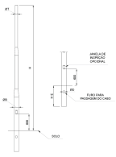

Confeccionado em tubo redondo de anço carbono SAE 1010/1020, em alturas variadas de 2 metros a 15 metros.
Galvanizado a fogo por imersão conforme norma NBR-6323 da ABNT, garantindo longa vida útil ao mobiliário. Fixação flangeada (base e chumbador), chumbador fornecido nas dimensões adequadas a altura do poste conforme tabela anexa. Aplicação em diversos áreas como: Praças, estacionamentos, vias públicas, condomínios entre outros.
| Referência | |||||
|---|---|---|---|---|---|
| Poste | Engaste | ||||
| H (Últil) | Ø B | Ø T | Ø D | H E | |
| MLP-CSE-2000 | 2000 | 76,20 | 60,30 | 32 | 500 |
| MLP-CSE-3000 | 3000 | 76,20 | 60,30 | 32 | 500 |
| MLP-CSE-4000 | 4000 | 76,20 | 60,30 | 32 | 500 |
| MLP-CSE-5000 | 5000 | 76,20 | 60,30 | 32 | 500 |
| MLP-CSE-6000 | 6000 | 76,20 | 60,30 | 32 | 1000 |
| MLP-CSE-7000 | 7000 | 88,90 | 60,30 | 32 | 1000 |
| MLP-CSE-8000 | 8000 | 88,90 | 60,30 | 32 | 1000 |
| MLP-CSE-9000 | 9000 | 88,90 | 60,30 | 32 | 1000 |
| MLP-CSE-10000 | 10000 | 114,30 | 60,30 | 32 | 1000 |
| MLP-CSE-11000 | 11000 | 114,30 | 60,30 | 40 | 1200 |
| MLP-CSE-12000 | 12000 | 114,30 | 60,30 | 40 | 1200 |
| MLP-CSE-13000 | 13000 | 127,00 | 60,30 | 40 | 1500 |
| MLP-CSE-14000 | 14000 | 127,00 | 60,30 | 40 | 1500 |
| MLP-CSE-15000 | 15000 | 127,00 | 60,30 | 40 | 1500 |
